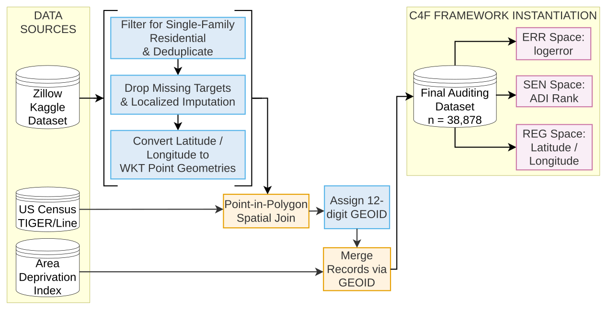
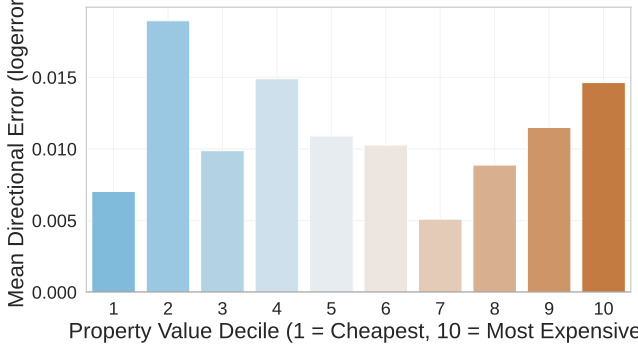
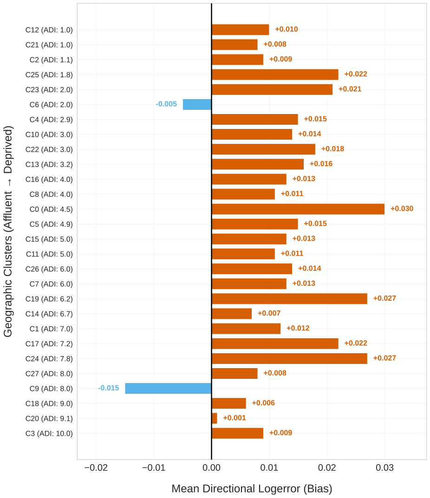
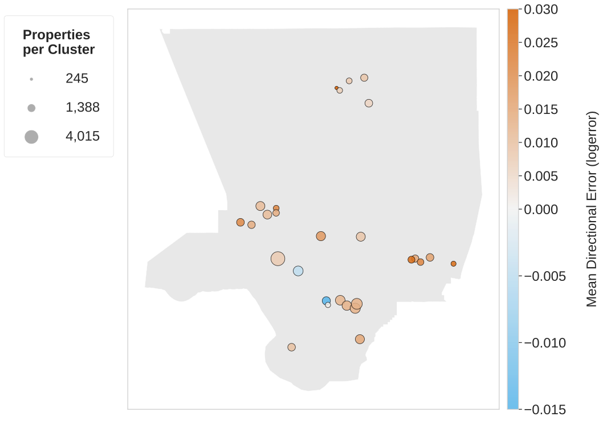

Auditing Automated Valuation Model Fairness Via Socioeconomic & Geographic Clustering
Authors: Tamara Muñoz Jordá | Supervisors: E. Beauxis Aussalet, M. Slokom
Vrije Universiteit Amsterdam
1. Problem & Methodology
Problem
Automated Valuation Models (AVMs)
risk systematically misvaluing neighbourhoods.
Post-deployment audits face constraints from opaque
"black-box" models
.
Privacy laws restrict access to sensitive
demographic data
.
Solution & Data
Applied unsupervised
Clustering for Fairness (C4F)
framework.
Analysed
38,878 residential properties
in Los Angeles County.
Merged Zillow transaction errors with Census
Area Deprivation Index (ADI)
.
Approach
K-Medoids spatial clustering
with Gower distance metric.
ADI feature weight of 2.0
to enforce dimensional parity.
2. Data Pipeline

Fig. 1: Workflow architecture linking 38,878 Zillow transactions to Census Block Group deprivation ranks.
3. Finding 1: U-Shaped Bias Curve
Absolute predictive error
peaks at both wealth extremes
.
Isolated socioeconomic dimensions reveal a
U-shaped inaccuracy pattern
.

Fig. 5a: Valuation error magnitude (\(\text{|logerror|}\)) deteriorates at both ends of the wealth spectrum.
4. Finding 2: Algorithmic Gentrification Blindspot
Over
93% of clusters
face systematic
overvaluation
.
Most acute
undervaluation
concentrates in
Cluster 9
.

Fig. 9: Opposite-signed assessment burden contrasting pervasive overvaluation against concentrated local undervaluation.
5. Geographic Cluster Map

Fig. 6: Geographic projection of 28 K-Medoids clusters isolating systematic undervaluation in a vulnerable neighbourhood.
6. Takeaway & Limitations
Aggregate absolute-error parity metrics obscure
acute neighbourhood-level economic harm
.
Unsupervised spatial auditing
empowers regulators to detect proxy leakage without protected demographic attributes.
Key Limitation
Area-level census proxies (ADI) assigned to individual properties risk
ecological fallacy
.
Code & Contact
github.com/tammerz/unsupervised-fairness-eval
Email:
t.m.jorda@student.vu.nl